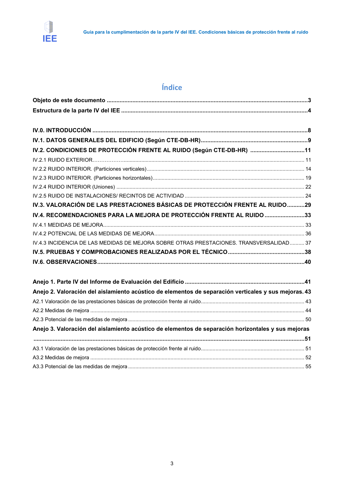

GUIA · Anejo 2. Valoración del aislamiento acústico de elementos de separación verticales y sus mejoras. 43 · versión 2016-11-01 · capa guia
Formatos: JSON compacto · Markdown · PDF fuente
Ámbito del documento · texto del ámbito · documento y tablas
Tipo: figuras · nivel 1 · sección estimada: Anejo 2. Valoración del aislamiento acústico de elementos de separación verticales y sus mejoras. 43 · padre:
Anejo 2. Valoración del aislamiento acústico de elementos de separación verticales y sus mejoras. 43 A2.1 Valoración de las prestaciones básicas de protección frente al ruido ....................................................................... 43 A2.2 Medidas de mejora ................................................................................................................................................... 44 A2.3 Potencial de las medidas de mejora ......................................................................................................................... 50

PDF fuente redistribuible: copia fiel enlazada en esta página (SHA256 verificado).